Seccionamiento del carril lateral del compartimento delantero — Soldadura dura
Procedimiento de desmontaje
Advertencia: Consulte Advertencia en relación con el equipo autorizado para la reparación de choques en la sección Prólogo
Advertencia: Consulte Advertencia de manejo de vidrio y chapa en la sección Prólogo
- Deshabilite el sistema SIR. Consultar Deshabilitación y habilitación del sistema de airbag (SIR). .
- Desconecte el cable negativo de la batería. Consultar Desconexión y conexión del cable de batería negativo .
- Retirar todas las piezas y componentes relacionados.
- Compruebe visualmente los daños. Repare la mayor parte posible de los daños.
- Retirar los selladores y los materiales anticorrosión del área de reparaciones según sea necesario.
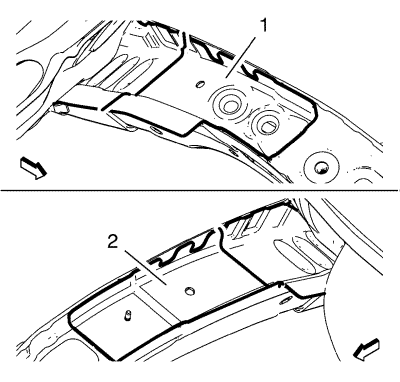
- Haga líneas de corte en el refuerzo central -- lado izquierdo (1) o derecho (2).
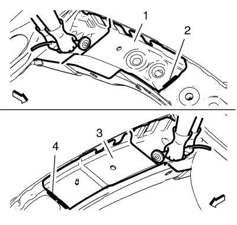
- Corte el lado izquierdo del refuerzo central (1) y pula los topes de las soldaduras de fábrica (2).
- Corte el lado derecho del refuerzo central (3) y pula los topes de las soldaduras de fábrica (4).
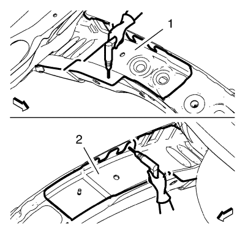
- Localice y marque todas las soldaduras de fábrica necesarias del refuerzo central.
- Perfore las soldaduras de fábrica del refuerzo central -- lado izquierdo (1) o derecho (2).
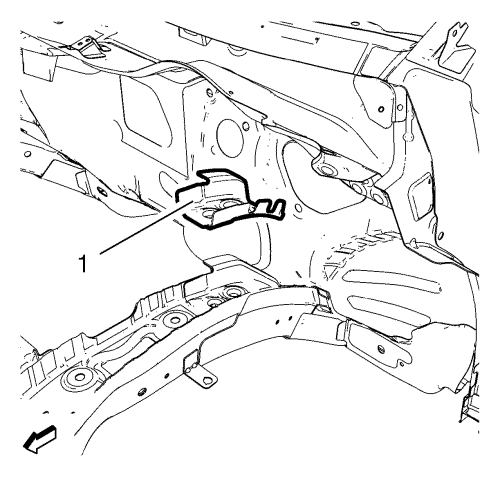
- Extraiga el refuerzo central (1).
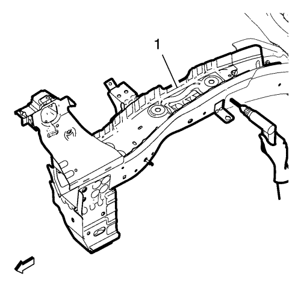
- Localice y marque todas las soldaduras de fábrica necesarias del carril lateral delantero del compartimento.
- Perfore las soldaduras de fábrica del carril lateral delantero del compartimento delantero (1).
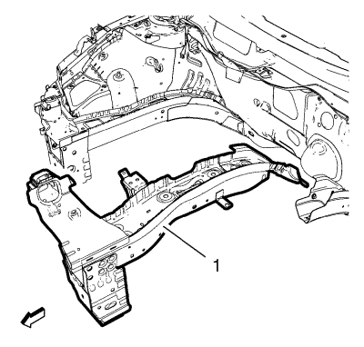
- Desmonte el carril lateral delantero del compartimento delantero (1).
Procedimiento de montaje
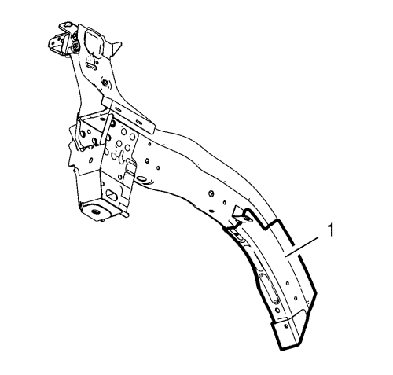
- Desmonte el carril lateral intermedio del compartimento delantero (1) de la pieza de repuesto.
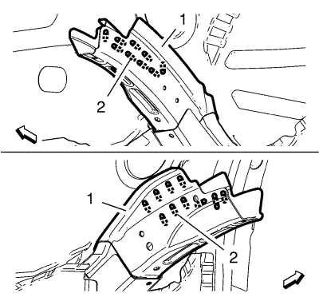
- Utilice los orificios (1) taladrados para elaborar orificio de 20x 8 x 24 mm (5/16 x 14/16 pulg.) en el carril lateral intermedio del compartimento delantero -- lado izquierdo (2).
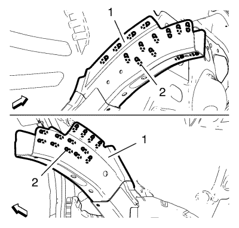
- Utilice los orificios (1) taladrados para elaborar orificio de 27x 8 x 24 mm (5/16 x 14/16 pulg.) en el carril lateral intermedio del compartimento delantero -- lado derecho (2).
- Monte el carril lateral del compartimento delantero (1) con un sistema de medición tridimensional.
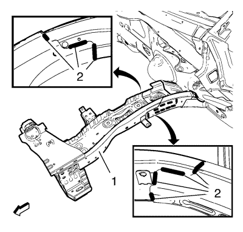
- Aplique una soldadura dura al carril lateral del compartimento delantero (1) - lado izquierdo como corresponda.
- Aplique una soldadura dura (2) al carril lateral del compartimento delantero (1) - lado derecho como corresponda.
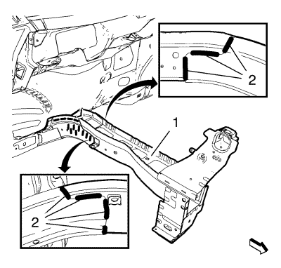
- Aplique una soldadura dura al carril lateral del compartimento delantero (1) - lado derecho como corresponda.
- Aplique una soldadura dura (2) al carril lateral del compartimento delantero (1) - lado derecho como corresponda.
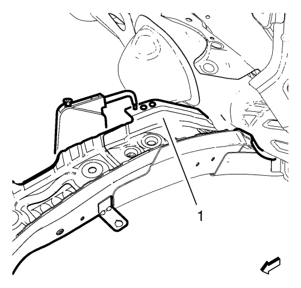
- Aplique una soldadura por puntos al refuerzo central (1) - lado izquierdo como corresponda.
- Aplicar los selladores y los materiales anticorrosión para el área de reparaciones según sea necesario.
- Pinte la zona reparada.
- Instalar todas las piezas y componentes relacionados.
- Conecte el cable negativo de la batería. Consultar Desconexión y conexión del cable de batería negativo .
- Activar el sistema SIR. Consultar Deshabilitación y habilitación del sistema de airbag (SIR). .
| © Copyright Chevrolet. All rights reserved |